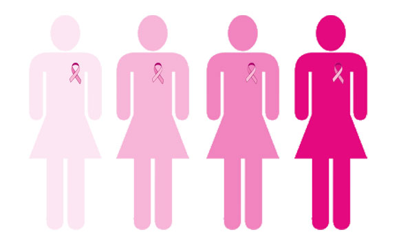
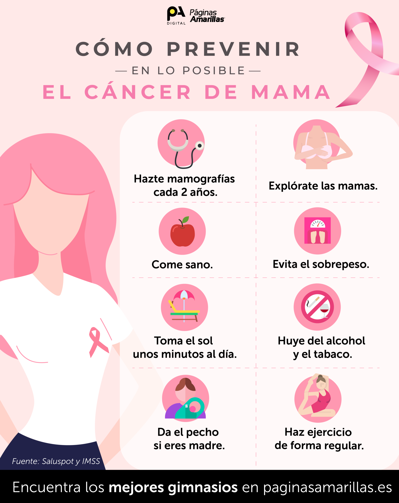

Cáncer de mama ¿Qué es?
El cáncer de mama es un tipo de cáncer que se origina en las células del tejido mamario. Es uno de los cánceres más comunes en las mujeres, aunque también puede afectar a los hombres, aunque con mucha menos frecuencia. El cáncer de mama se forma cuando las células en el tejido mamario comienzan a crecer de manera descontrolada. Puede desarrollarse en diferentes partes de la mama, como los conductos que transportan la leche (cáncer de mamaductal) o en los lóbulos que producen la leche (cáncer de mama lobulillar). Con el tiempo, estas células cancerosas pueden invadir los tejidos circundantes y, en etapas avanzadas, pueden propagarse a otras partes del cuerpo a través del sistema linfático o el torrente sanguíneo.
Los tipos de cáncer de mama se pueden clasificar en función de diversas características, como la histología (aspecto de las células cancerosas), los marcadores moleculares y los receptores hormonales. Los tipos principales de cáncer de mama incluyen:
- Carcinoma ductal in situ (CDIS): En este tipo, las células cancerosas se encuentran en el revestimiento de los conductos de la mama pero no han invadido los tejidos circundantes. A menudo se considera una etapa preinvasiva del cáncer de mama.
- Carcinoma ductal infiltrante (CDI): Es el tipo más común de cáncer de mama. Se origina en los conductos de leche y luego invade los tejidos circundantes. Puede propagarse a otras partes del cuerpo a través del sistema linfático o el torrente sanguíneo.
- Carcinoma lobulillar in situ (CLI): Comienza en los lóbulos de la mama, pero no invade los tejidos circundantes. Al igual que el CDIS, a menudo se considera una etapa preinvasiva.
- Carcinoma lobulillar infiltrante (CLI): Este tipo de cáncer de mama comienza en los lóbulos y puede invadir los tejidos circundantes, similar al CDI. Es menos común que el CDI.
- Carcinoma inflamatorio de mama: Es una forma rara y agresiva de cáncer de mama que se caracteriza por el enrojecimiento, hinchazón y calor en la mama afectada. A menudo se presenta en una etapa avanzada.
- Carcinoma triple negativo: En este tipo cáncer de mama, las células cancerosas carecen de receptores para estrógeno, progesterona y HER2/neu, lo que lo hace más difícil de tratar con terapias dirigidas a estos receptores. Por lo tanto, suele ser más agresivo y se asocia con un pronóstico menos favorable.
- Carcinoma de mama HER2-positivo: En este tipo de cáncer de mama, las células cancerosas tienen una cantidad excesiva de la proteína HER2/neu en su superficie. Puede responder bien a tratamientos específicos dirigidos a esta proteína.
- Carcinoma de mama con receptores hormonales positivos: En este caso, las células cancerosas tienen receptores para hormonas como el estrógeno y/o la progesterona. Estos cánceres a menudo responden a tratamientos hormonales.
La detección temprana del cáncer de mama es fundamental para un pronóstico favorable. Las mujeres deben realizarse mamografías periódicas y autoexámenes de mama para detectar posibles cambios o anomalías en las mamas. El tratamiento del cáncer de mama puede incluir cirugía, radioterapia, quimioterapia, terapia hormonal y terapias dirigidas, y la elección del tratamiento depende de varios factores, como el tipo de cáncer, el estadio y la salud general del paciente. Es importante estar informado sobre el cáncer de mama y tomar medidas para su detección temprana, ya que esto puede mejorar significativamente las posibilidades de curación.
"La detección temprana es la clave para vencer al cáncer. No esperes, examínate y prevén."